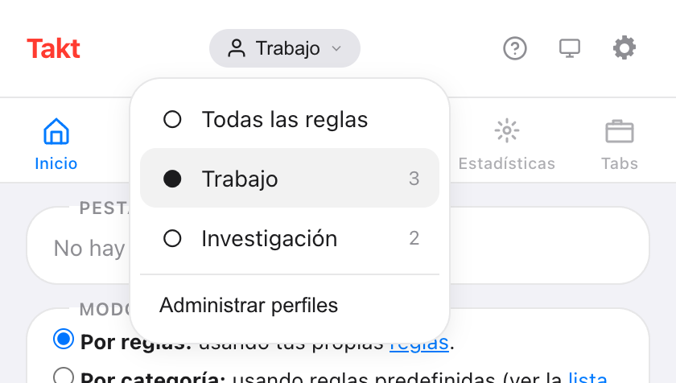
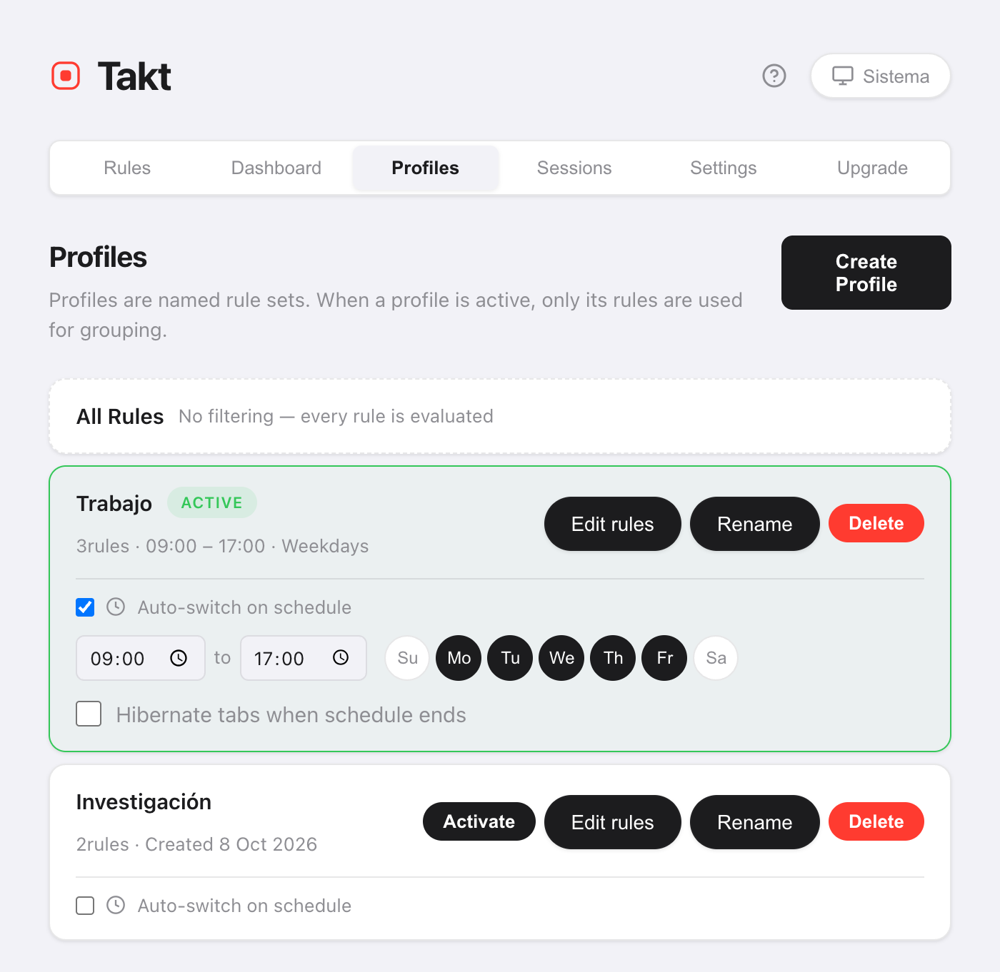

Respuesta corta: en la página de opciones de Takt, abre Profiles, crea "Trabajo" y "Personal" y asigna reglas a cada uno. Cambia desde el menú de perfiles del popup, o marca Auto-switch on schedule y fija las horas y los días.
- Cuando hay un perfil activo, solo sus reglas agrupan tus pestañas.
- Los horarios funcionan por hora del día y día de la semana, y se comprueban una vez por minuto.
- Opcional: hibernar tus pestañas cuando termina el horario. Premium
¿Para qué quiero más de un conjunto de reglas de pestañas?
Porque una regla que ayuda en el trabajo estorba en casa. Un grupo "Code" para GitHub viene bien a las 10:00. A las 21:00 quizá prefieras tener agrupados YouTube y las recetas, y ningún grupo de trabajo.
Sin perfiles tienes dos opciones: una lista larga de reglas que intenta cubrirlo todo, o ir activando y desactivando reglas a mano. Con los perfiles, cada contexto tiene su propia lista corta.
¿Cómo creo un perfil?
- Abre la página de opciones de Takt y ve a Profiles.
- Haz clic en Create Profile y ponle un nombre.
- Copia en él todas tus reglas actuales, o empieza de cero.
- Haz clic en Edit rules para marcar las reglas que usa este perfil.
Una regla nueva que crees con un perfil activo se añade automáticamente a ese perfil.
¿Cómo cambio de perfil?
Abre el popup y haz clic en el nombre del perfil, arriba. El menú muestra Todas las reglas y cada perfil, con su número de reglas. Elige uno y se aplica al momento.

Todas las reglas desactiva los perfiles, así que se evalúan todas las reglas. Cambiar no toca los grupos que ya tienes. Las pestañas nuevas siguen las reglas nuevas; haz clic en Agrupar pestañas en el popup para reagrupar el resto.
¿Cómo cambio de perfil automáticamente según la hora?
En la tarjeta de un perfil, marca Auto-switch on schedule. Después, configura:
- Hora de inicio y de fin. Por defecto, de 09:00 a 17:00.
- Días. Activa o desactiva de Su a Sa. Por defecto, de lunes a viernes.
- Hibernate tabs when schedule ends (opcional).

Takt comprueba el horario una vez por minuto. Cuando empieza la franja, activa el perfil. Cuando termina, vuelve a Todas las reglas.
Si dos horarios se solapan, gana el perfil que se creó primero.
¿Qué hace "Hibernate tabs when schedule ends"?
Al final de la franja, Takt hiberna tus pestañas abiertas. Deja fuera la pestaña activa, las que reproducen audio, las fijadas y cualquier URL de tu lista de pestañas que nunca se suspenden.
Tus pestañas de trabajo dejan de usar memoria cuando termina la jornada, y se quedan en la lista de Hibernar hasta que las despiertes.
Perfiles frente a otras formas de separar trabajo y casa
| Perfiles de Chrome separados | Perfiles de Takt | |
|---|---|---|
| Qué se separa | Todo: ventanas, historial, sesiones iniciadas | Solo las reglas de agrupación |
| Mismas ventanas y pestañas | No | Sí |
| Cambia según un horario | No | Sí |
Si necesitas sesiones iniciadas e historial separados, usa perfiles de Chrome distintos. Los perfiles de Takt solo cambian cómo se agrupan las pestañas dentro del navegador que ya usas.
Lo que los perfiles no hacen
- No cierran ni abren pestañas. Un perfil cambia qué reglas se aplican. Para cambiar todo un conjunto de pestañas, usa las sesiones.
- Durante su franja, manda el horario. Si cambias de perfil a mano en horas programadas, Takt vuelve a cambiarlo en la siguiente comprobación, en un minuto como mucho. Desactiva el horario para quedarte en otro perfil.
- La hora de fin tiene que ser posterior a la de inicio. Una franja que pasa de la medianoche necesita dos perfiles.
Reglas de trabajo en el trabajo. Reglas de casa en casa.
Añadir Takt a Chrome, gratisPreguntas frecuentes
¿Qué pasa con las reglas que no están en el perfil activo?
Se ignoran hasta que vuelvas a cambiar. Elige Todas las reglas para volver a usarlas todas.
¿Cambiar de perfil reagrupa mis pestañas abiertas?
No. Los grupos existentes se quedan. Las pestañas nuevas siguen las reglas nuevas. Haz clic en Agrupar pestañas en el popup para reagrupar lo que está abierto.
¿Cada cuánto comprueba Takt el horario?
Una vez por minuto. Un perfil se activa como mucho un minuto después de su hora de inicio y se desactiva como mucho un minuto después de su hora de fin.
¿Los perfiles son gratis?
No. Los perfiles y los horarios son Premium, 3 $/mes o 30 $/año. El plan Free incluye 5 reglas y la agrupación por reglas.